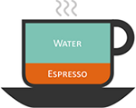

Americano
A single shot of espresso added to a cup of hot water. Many like to drink this as they would a regular brewed coffee with milk and sugar. Purists say to keep milk to a minimum to get the most flavor from the espresso.

A single shot of espresso added to a cup of hot water. Many like to drink this as they would a regular brewed coffee with milk and sugar. Purists say to keep milk to a minimum to get the most flavor from the espresso.
A cafe latte, or "latte" for short, is an espresso-based drink with steamed milk and micro-foam added to the coffee. This coffee is much sweeter compared to espresso due to the steamed milk.
A mocha is a mix between a cappuccino and a hot chocolate. It is made by putting mixing chocolate powder with an espresso shot and then adding steamed milk and micro-foam into the beverage.
A cappuccino is like a latte. However, the key difference between a latte and cappuccino is that a cappuccino has more foam and chocolate placed on top of the drink. Further, a cappuccino is made in a cup rather than a tumbler glass.

A strong, concentrated coffee made by forcing pressurized water through finely-ground coffee beans. Served in a small cup called a demitasse, and meant to be taken quickly, like a shot.
Espresso con panna which means "espresso with cream" in italian, is a single or double shot of espresso topped with whipped cream.

Flat white is a coffee that is popular in Australia and New Zealand. It is made the same as a cappuccino except it does not have any foam or chocolate on top.
Espresso with either steamed milk or foamed milk, and flavoring. The most common combination is the caramel macchato - espresso, vanilla, steamed milk, drizzled with caramel.